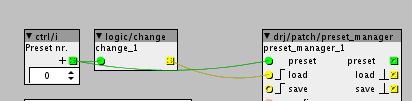
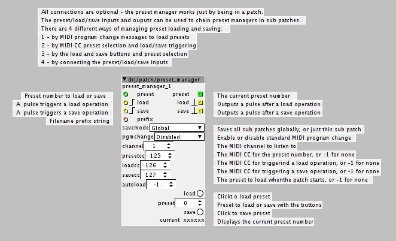
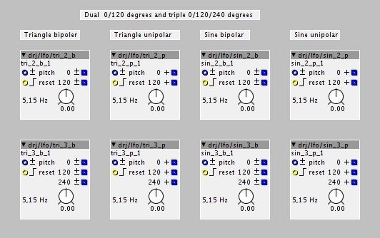

How to set that up on top level If the object itself is included in the saved state?
Thanks again, and awesome work 

How to set that up on top level If the object itself is included in the saved state?
Thanks again, and awesome work
The preset manager does indeed save its own parameters (it just has three parameters: preset, load and save buttons - the other ones are attributes and are only saved with the patch). This is not a problem though, the built in load and save buttons are negative edge triggered (action happens when you release them) to avoid any undue effects of that. At one point I had the module skip the saving of its own parameters, but for several reasons it was better to go for action-on-release buttons on the module and let things work 'naturally'.
The only no-go is to connect a button to the save trigger input on a preset manager on the same patch level (the buttons pressed state would be saved) - but that's not necessary since the module has load and save buttons built in. Oh, and you don't want to create a loop with the load/save trigger chain 
Works pretty well on its own.

Also I noticed like you said that you cannot connect a button to the save input.... you cant connect a ctrl/i to the preset inlet, cause the ctrl/i is saved with the presets. Like this:

But still really cool Thanks 
The preset manager has been updated. This new version have two new features:
1 - Saves parameters as name/value pairs [1], and so it should not be dependent on the order/placement of objects in the patch.
2 - Introduces a new attribute called "savemode". The "Global" mode allows a single preset manager to save all parameters in the patch, including all sub patches. The "SubPatch" mode works like the previous version, except for point 1 above.
Edit: I just added a third save mode "SubPatchV1", which is the exact same functionality as the first version of preset manager. While I'm keen on the added integrity name binding gives, missing the integer spinbox parameter (and possibly others) is not so cool, and I'll leave this option in until full integrity can be ensured for the other modes.
There is currently a drawback to implementing point 1: some parameters aren't currently being registered by the patches (in xpatch.cpp), and they will not be saved. When this issue/bug in the Axoloti base software is fixed, all parameters will be saved as expected. Currently I have identified the integer spinbox (ParameterInt32Box) as not being registered, but there could be others. If you test this object, please watch the Axoloti console and see if it reports any skipped/missing parameters on save/load in SubPatch mode (in Global mode this can't be easily detected unfortunately) - if you spot any other non-registered parameters, recognized by not being updated on a load, please report here.
Apart from the missing parameter type(s?), it now works better, since data integrity is helped by storing the parameter names. There is one problem with that though: in Global mode, two equally named parameters in different sub patches will create confusion. This can only be fixed if the patches store a list of sub patches (in xpatch.cpp, I'm discussing this elsewhere with tb, and I'm hoping this can be included in the next Axoloti version).
Given a fix for the non-registered parameters and a sub patch list, this module will perform complete preset management, like we're used to from most synthesizers.
The file format version has been bumped from 1 to 2. If you have saved data with the previous version, it should still be loaded back, but that support will be removed with the next update.

[1] In the files, only a hash of the name is actually saved.
drj/switch/ser_par_1 - mono serial/parallel switch
drj/switch/ser_par_2 - stereo serial/parallel switch
drj/switch/ser_swap_1 - mono serial order swapping switch
drj/switch/ser_swap_2 - stereo serial order swapping switch
drj/switch/par_swap_1 - mono parallel output swapping switch
drj/switch/par_swap_2 - stereo parallel output swapping switch
drj/switch/fm4op_alg - router for 4 operator FM synthesis, ala TX81Z
Ready to use
These switches were made to cover for switchable FX routing in my patches, but they can of course be used for anything requiring the provided switching functionality.
The fm4op_alg object is for building 4 operator FM synthesis patches ala TX81Z. It has the 8 algorithms that the TX81Z has, with the difference that all leaf operators have a feedback loop available, not only operator 4 as in the TX case. If you do not want feedback, just turn down the modulation index for the operators in question (that would be part of the operators you supply).
Hi DrJustice,
Not sure if you take requests , but is there any chance of a triangular and sine LFOs with 120 degree phase outputs? those would be useful to create Solina-like "triple-chorus" effects. Thanks!
^ The preset manager is back.
I don't know why it was gone (but it's a good thing: I want some other objects to be gone, or rather moved to different folders - must talk to Johannes/tb about this).
drj/lfo/sin_2_b - dual bipolar sine lfo, 0 and 120 degrees
drj/lfo/sin_2_p - dual unipolar sine lfo, 0 and 120 degrees
drj/lfo/sin_3_b - triple bipolar sine lfo, 0, 120 and 240 degrees
drj/lfo/sin_3_p - triple unipolar sine lfo, 0, 120 and 240 degrees
drj/lfo/tri_2_b - dual bipolar triangle lfo, 0 and 120 degrees
drj/lfo/tri_2_p - dual unipolar triangle lfo, 0 and 120 degrees
drj/lfo/tri_3_b - triple bipolar triangle lfo, 0, 120 and 240 degrees
drj/lfo/tri_3_p - triple unipolar triangle lfo, 0, 120 and 240 degrees
Ready to use
This is an extension to the family of bipolar and unipolar LFOs, this time with two and three outputs at successively delayed phases, 0, 120 and 240 degrees. All of them have pitch and phase reset inputs.

you removed it, in this commit... perhaps an accident?
the only disadvantage with removing, rather than moving it you can loose the commit/change history.
so if you need things moved, you can do this directly with git tools, or PM me if you need a hand.
(perhaps worth pointing out to others... if you accidentally delete something we get it back, such is the wonders of version control... nothing is lost )
Ahhh... yes, I should've checked the git history. I did the move from here - seems fine in the repository.
drj/osc/phasor_pm_pr_b - bipolar phasor with phase modulation and phase reset
drj/osc/phasor_pm_pr_p - unipolar phasor with phase modulation and phase reset
drj/osc/phasor_pm_s_b - bipolar phasor with phase modulation and sync
drj/osc/phasor_pm_s_p - unipolar phasor with phase modulation and sync
drj/osc/sine_pm_pr_b - bipolar sine osc with phase modulation and phase reset
drj/osc/sine_pm_pr_p - unipolar sine osc with phase modulation and phase reset
drj/osc/sine_pm_s_b - bipolar sine osc with phase modulation and sync
drj/osc/sine_pm_s_p - unipolar sine osc with phase modulation and sync
Ready to use
A set of phasors and sine oscillators with phase reset/sync and phase modulation. These were "leftovers" from a request, and have basically only been moved into the drj/osc folder and published.
You're very prolific in what you're doing  the sine bipolar with reset is THE THING. I can see (hear) solid kick drums coming
the sine bipolar with reset is THE THING. I can see (hear) solid kick drums coming
Some great stuff in here but I get this when using drj/osc/quad_sine:
/Users/pmjulian/Documents/axoloti/build/xpatch.cpp:617:46: error: 'freq' was not declared in this scope
MTOFEXTENDED(param_pitch + inlet_pitch,freq);
^
./axoloti_math.h:126:3: note: in definition of macro 'MTOFEXTENDED'
frequency= (r< ^
/Users/pmjulian/Documents/axoloti/build/xpatch.cpp:624:16: error: 'freq' was not declared in this scope
Phase += freq + inlet_fm[buffer_index];
^
make: *** [/Users/pmjulian/Documents/axoloti/build/xpatch.bin] Error 1
shell task failed, exit value: 2
This is under 1.0.9
drj/audio/out_stero_vol - output with volume control and 6dB gain
drj/ctrl/dial_pitch - dial with pitch mapped output
drj/ctrl/fadein_xor - fade/difference control
drj/ctrl/fadeout_xor - fade/difference control
drj/math/> const i - compare to constant integer
drj/math/< const i
drj/math/== const i
drj/math/!= const i
drj/math/glide_fast - a faster glide module
drj/math/keyscaler - keyboard breakpoint sand scale
drj/math/offset_scale_1 - out = offset + (in * scale)
drj/math/offset_scale_2 - out = offset + (in * scale), s-rate
drj/lfo/tri_ph_b - updated triangle LFOs, added phase input
drj/lfo/tri_ph_u
drj/midi/clock_rx - MIDI clock and tranport control receiver
drj/midi/clock_tx - MIDI clock and tranport control transmitter
drj/midi/note_tx - note transmitter with live channel control
Ready to use
This is an accumulation of various objects, and also two updated LFOs
drj/delay/read_sync - delay reader with sync and modulation
drj/delay/read_interp_sync - interpolated delay reader with midi/clock sync and modulation
drj/delay/read32_sync - delay reader with sync and modulation, 32 bit
drj/delay/read32_interp_sync - interpolated delay reader with midi/clock sync and modulation, 32 bit
drj/lfo/lfo_sync - multi waveform LFO with midi/clock sync
Ready to use
Two 16 bit readers (one is interpolated), two 32 bit readers, and an LFO which can be synced to a clock pulse or to MIDI clock. The modules are phase locked to the sync source.
The delays have both an absolute time input (as for the original delays) and a proportional time modulation input.
The 24PPQ clock input doesn't have to be 24 Pulses Per Quarter note - it's just labelled that way for the sake of convention. The MIDI and 24PPQ clocks can be divided down using the clockdiv parameter.
drj/seq/seq_clk - step sequencer clock controller
drj/seq/seq_clk_sync - step sequencer clock controller with midi/clock sync
drj/seq/pattern_selector - 4 way syncable step sequencer pattern selector
drj/seq/stepseq_4_b - bipolar value * 4 selector
drj/seq/stepseq_4_u - bipolar value * 4 selector
drj/seq/stepseq_4_pitch - bipolar value * 4 selector
drj/seq/stepseq_4_switch - switch * 4 selector
drj/seq/stepseq_8_b
drj/seq/stepseq_8_u
drj/seq/stepseq_8_pitch
drj/seq/stepseq_8_switch
drj/seq/stepseq_16_b
drj/seq/stepseq_16_u
drj/seq/stepseq_16_pitch
drj/seq/stepseq_16_switch
Ready to use
This is a set of objects to facilitate the mechanics of berlin school sequencing,
The emphasis is on performance controllability and fun factor. Therefore every control is accessible so it can be bound to MIDI CC, either on knobs directly or via control objects connected to the performance inputs.
The core is the sequencer clock controller. This controls the how the steps are played in a number of ways. The clock is syncable to MIDI or to a clock pulse input, as well as having an internal clock. The sequencer step value blocks use dials in order to make them CC assignable.
There are a few patches that demonstrate the use of these objects. These patches make use of a delay sub patch which will described separately:
drj/seq/seq_test_1.axp - drj/seq/seq_test_7.axp
Here is one of the examples performance sequencer patches, seq_test_6.axo:

{kind=link}
{kind=link}
{kind=link}
{kind=link}
{kind=link}
{kind=link}
{kind=link}